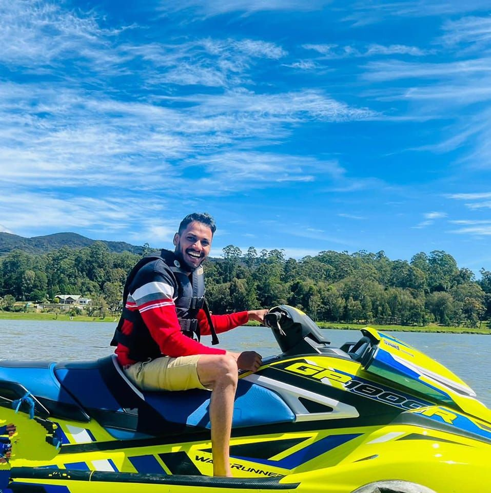
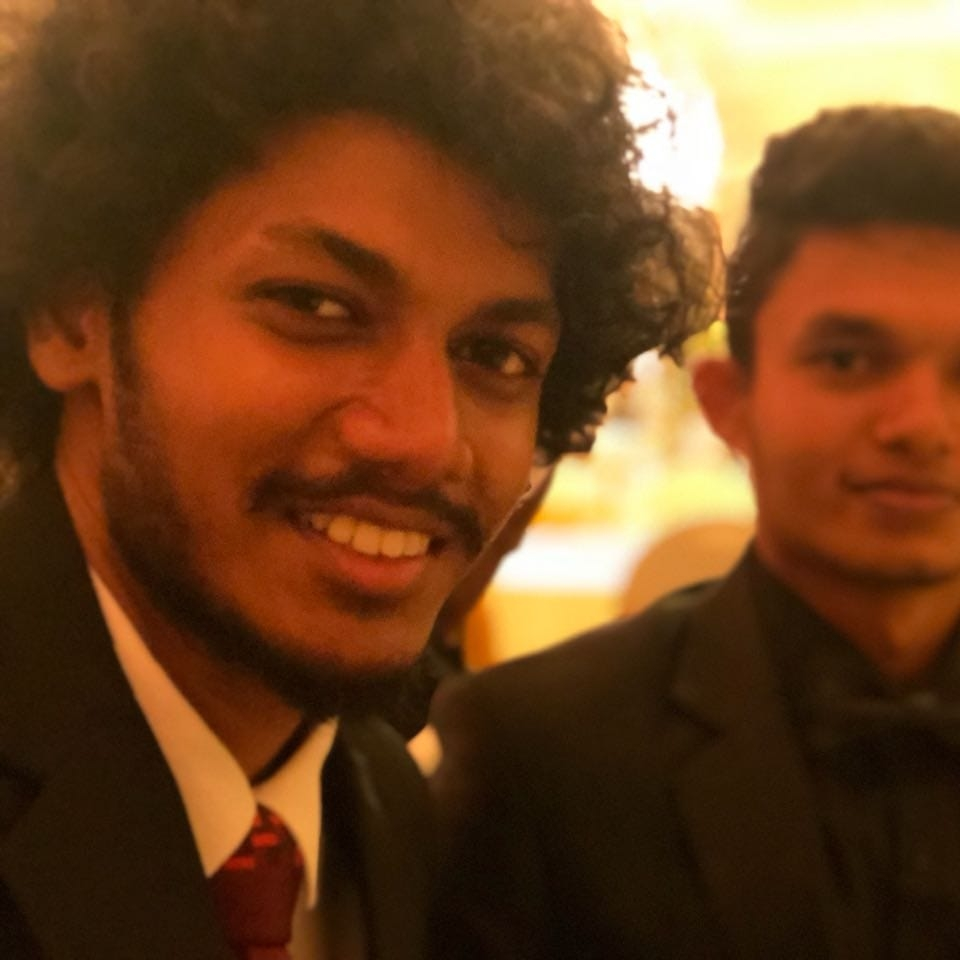

|  |  |
|---|
I am Don Chethika who uses knowledge of IT and soft skills to make people more comfortable in day to day life with technology. I work hard as an individual to make at least a small change to make world a better place. I love spend my time with people and love traveling in leasure times. Guitar is my favourite partner when I feel sad or happy. Currently I'm living with my brother in Osaka,Japan which is known as a wonderful city in the world. As a student in kcgi University I am developing my ICT knowledge and Japanese language to do my best as a developer.
In my childhood I learned in Holy Cross College kalutara. After I got good scoring for my Alevels I got chance to enter to the government University,University of Kelaniya as a physical Science Student. After completing my degree programm successfully I wanted to learn more and work like a proffessional developer. So as my brother guided I came to Japan,enterd to Fuji Language School to learn Japanese language and then entered to Kcgi University to fullfill my dream of learn more in ICT and work as a developer.
| University/School | Subjects | Years |
|---|---|---|
| Holy Cross College | Olevel/Alevel(Mathematics Stream) | 2002-2015 |
| University of Kelaniya | Phyisical Science | 2017-2020 |
| Fuji Language School | Japanese Language | 2022 |
| KCGI University | Masters in IT | 2022 |
In my university period and in the internship period I got learned and done projects using following languages and platforms.
Languages : Java | C++ | SQL | XML|Spring boot|react Platforms : Windows | Mac | Linux Database : MySQL Development Tools : NetBeans IDE | XAMPP | WAMP | IntelliJ IDEA Applications : matlab | maple | mathematica | MS Office & other Microsoft packages | Adobe Photoshop | Android Studio
| PROJECT | TECHNOLOGIES |
|---|---|
| Video streamming application(Internship) | React native/Springboot/MySql |
| Library Management System(University) | C++/MySql |
Memberships : Computer Society of Sri Lanka. (CSSL). Sudents Council of Faculty of Science University of Kaleniya. Sports : Wrestling, 5000m, 1500m, 800m running, E-Sports Other : School Senior Prefect (20011-2015) Junior scout in Holy Cross College, Kalutara Member of School Brass Band.